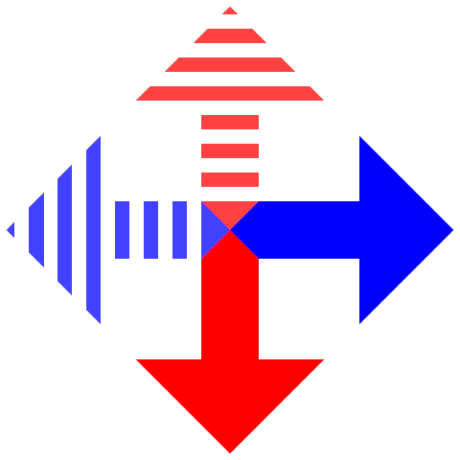

Download Skin
Upload Model Json
Download Model Json
Reset
Header
Add
Copy All
Paste All
Delete All
Debug
Copy
Paste
Delete
Snap to opposing layer
Displacement in half pixels (between 0 and 63):
Assymetric Direction:
Use Special Assymetric Displacement Transform
Assymetric Displacement in half pixels (between -63 and 63):
Assymetric Special Mode
Nothig here
UV Scale Fix
Top
Bottom
Left
Right
UV Offset
X min
X max
Y min
Y max
Note that the visual UV editor will not always accurately display mirrored and/or overflowing textures

UV Crop
Top
Bottom
Right
Left
Snap X
Snap Y